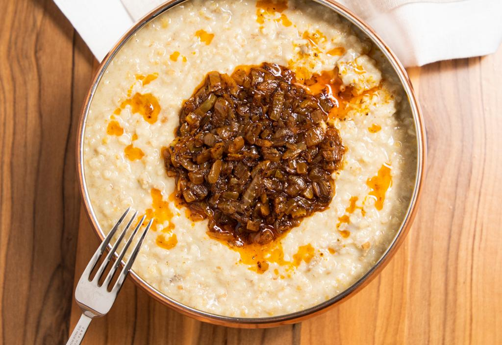

VISIT SAUDI ARABIA

A hearty porridge of crushed wheat cooked with meat or chicken, onions, and spices. A traditional dish enjoyed especially during Ramadan and celebrations.

Harees, haresa, hareesa, arizah, harise, jarish, jareesh, harisa, or korkot is a dish of boiled, cracked, or coarsely-ground cracked wheat or bulgur, mixed with meat and seasoned. Its consistency varies between a porridge and a gruel.